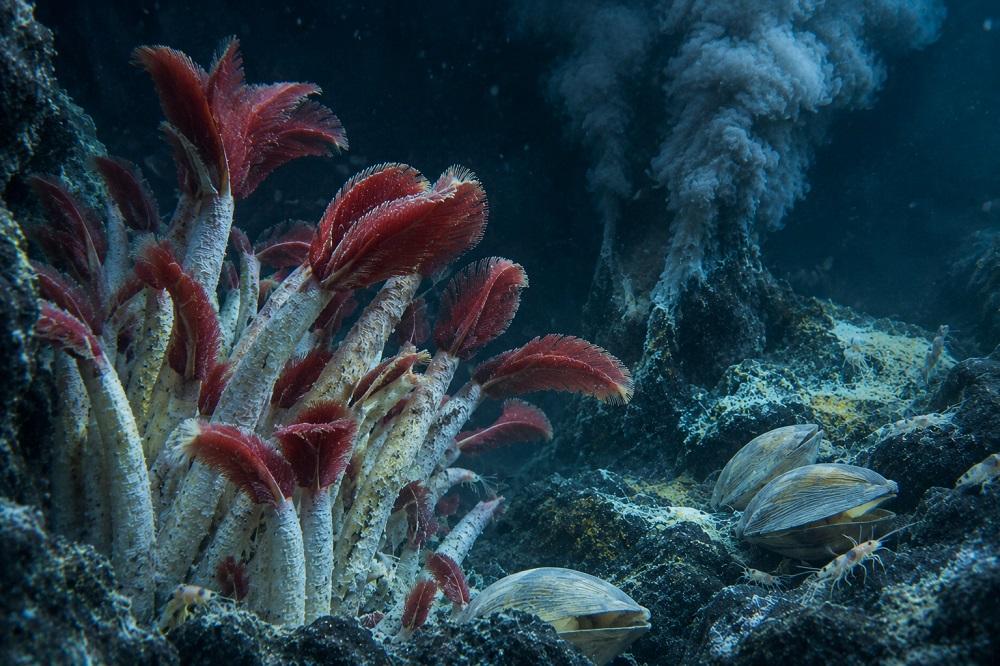

Inicio > Crónicas de un biblio-naturalista > Biomímesis en acción (12)
Biomímesis en acción (12)
La vida sin luz solar
Ecosistemas de fuentes hidrotermales
Una abundancia inesperada
En 1977, un grupo de científicos que exploraba la dorsal de Galápagos descendió aproximadamente 2.500 metros bajo la superficie del océano Pacífico. Investigaban fuentes termales submarinas: lugares donde el agua marina que circula a través de la corteza oceánica regresa al fondo del mar transportando calor y compuestos químicos disueltos. Lo que encontraron alrededor de aquellas fuentes fue extraordinario: densas comunidades de animales que vivían en una oscuridad permanente, entre ellos grandes almejas y otros organismos cuya abundancia parecía difícil de conciliar con las características de su entorno (Corliss et al. 1979).
La mayor parte de la vida en los fondos oceánicos profundos depende, directa o indirectamente, de la materia orgánica producida en las aguas iluminadas que se encuentran por encima. Organismos muertos, fragmentos de tejidos, partículas fecales y otros materiales descienden a través de la columna de agua, proporcionando alimento a comunidades situadas mucho más allá del alcance de la luz solar. Solo una fracción de la materia orgánica producida cerca de la superficie llega a los fondos oceánicos profundos.
La abundancia de vida alrededor de las fuentes hidrotermales exigía otra explicación. Algo estaba produciendo materia orgánica localmente, en un entorno donde la fotosíntesis era imposible.
El descubrimiento cuestionó una premisa fundamental acerca de la organización de los ecosistemas. La luz solar, fuente de energía que sostiene la mayor parte de la productividad biológica de la Tierra, podía estar ausente del entorno inmediato sin impedir el desarrollo de una comunidad biológica compleja.
Para las bibliotecas, los archivos y otras infraestructuras del conocimiento que operan en condiciones precarias, ese descubrimiento abre una interesante línea de indagación. Cuando un sistema pierde el acceso a los recursos que habitualmente sostienen su actividad, ¿podría reorganizarse en torno a una fuente de sustento fundamentalmente distinta?
Otra forma de ganarse la vida
La circulación hidrotermal comienza cuando el agua marina penetra en las fracturas de la corteza oceánica. A medida que circula por las rocas calientes, su composición química se modifica. Puede incorporar minerales disueltos y compuestos químicos reducidos, para finalmente regresar al océano a través de aberturas en el fondo marino.
La importancia biológica de este proceso se hace especialmente evidente allí donde los fluidos hidrotermales entran en contacto con el agua marina circundante. Ambos líquidos poseen propiedades químicas diferentes, y su interacción genera condiciones de las que determinados microorganismos pueden obtener energía.
Las bacterias y arqueas quimiosintéticas aprovechan esas diferencias químicas. Dependiendo del organismo y de las condiciones locales, compuestos como el sulfuro de hidrógeno o el hidrógeno molecular pueden participar en reacciones que proporcionan la energía necesaria para transformar el carbono inorgánico en materia orgánica. Esta producción sostiene redes tróficas cuyo desarrollo sería imposible si dependieran exclusivamente de la materia orgánica que desciende desde la superficie del océano (Dick 2019).
Las fuentes hidrotermales sostienen, por lo tanto, la productividad biológica mediante una vía metabólica alternativa. El calor contribuye a generar las condiciones geológicas y químicas, pero lo que muchos de estos microorganismos aprovechan realmente es la energía disponible a través de las reacciones químicas.
Existe una diferencia considerable entre descubrir otra fuente de energía y desarrollar la maquinaria biológica capaz de aprovecharla. Un compuesto químico que proporciona alimento a un organismo puede resultar tóxico o metabólicamente inaccesible para otro.
Los recursos presentes en un entorno no pueden comprenderse independientemente de las capacidades de sus habitantes.
Un animal que no come
Entre los habitantes de las fuentes hidrotermales del Pacífico se encuentra el gusano tubícola gigante Riftia pachyptila, un animal cuya anatomía ilustra hasta qué punto una fuente alternativa de alimento puede transformar un organismo.
Los ejemplares adultos carecen tanto de boca como de aparato digestivo. En su lugar, una parte considerable de su cuerpo está ocupada por un órgano denominado trofosoma, que alberga bacterias simbiontes. El gusano proporciona a estos microorganismos las sustancias necesarias para su metabolismo, mientras que las bacterias producen los compuestos orgánicos de los que depende la nutrición del animal.
Una investigación publicada en 1981 sentó las bases para comprender esta extraordinaria asociación (Cavanaugh et al. 1981). Estudios posteriores han revelado la complejidad fisiológica de la relación, incluida la presencia de hemoglobinas especializadas capaces de transportar tanto oxígeno como sulfuro hasta los simbiontes bacterianos.
La asociación ha dado lugar a un animal organizado en torno a una economía nutricional diferente. Su anatomía, su fisiología y su relación con el entorno se han desarrollado en consonancia con ella.
Este es quizás el aspecto más interesante de los ecosistemas de fuentes hidrotermales para el diseño de infraestructuras del conocimiento. Es posible que los recursos alternativos solo resulten verdaderamente útiles cuando las estructuras a través de las cuales se incorporan experimentan una transformación sustancial.
Una institución diseñada en torno a una determinada fuente de sustento puede estar mal preparada para aprovechar otra.
El metabolismo institucional del conocimiento
Las bibliotecas y los archivos poseen sus propias economías de recursos. Las colecciones requieren espacio físico, electricidad, equipamiento, conocimientos técnicos especializados, trabajo de descripción, materiales de conservación, asesoramiento jurídico y mecanismos de transferencia de responsabilidades. Estos recursos suelen reunirse mediante presupuestos institucionales, contratación de profesionales, financiación pública y estructuras administrativas establecidas.
Esas estructuras condicionan prácticamente todo lo que hace la institución, desde la elección del software hasta la frecuencia con que se revisan los registros.
Cuando desaparece la financiación, la respuesta habitual consiste en buscar otra que la sustituya. Una institución solicita una nueva subvención, reduce gastos, pospone actividades o intenta atraer a un nuevo patrocinador. La estructura organizativa subyacente suele seguir orientada hacia el mismo tipo de provisión de recursos.
Para muchas pequeñas iniciativas documentales, particularmente aquellas que operan fuera de las instituciones establecidas, esa provisión de recursos puede no llegar a estar nunca disponible.
Pensemos en un archivo local que documenta prácticas agrícolas, historias orales y cambios ambientales en una región rural. Un modelo institucional convencional requeriría un local, personal asalariado, equipos de grabación, un repositorio digital y un presupuesto para el trabajo de campo y el mantenimiento. Sin esos recursos, el archivo podría permanecer indefinidamente en la fase de proyecto.
Sin embargo, en la región ya se desarrollan actividades a través de las cuales se generan materiales documentales. Los agricultores intercambian información sobre los cultivos y las condiciones meteorológicas. Los docentes preparan materiales educativos. Las familias conservan fotografías y correspondencia. Las organizaciones locales producen mapas, actas de reuniones y relatos de conflictos ambientales. Las emisoras de radio comunitarias recogen voces y testimonios. Estas actividades poseen un potencial documental, aunque rara vez se hayan organizado con fines archivísticos.
En torno a ellas podría surgir una infraestructura diferente. Los acuerdos relativos a la custodia, los protocolos de registro, las prácticas descriptivas compartidas, los permisos y el intercambio de copias podrían permitir que las actividades existentes contribuyeran a un sistema documental colectivo. Un archivo de este tipo requeriría una modalidad particular de trabajo profesional. Su desarrollo implicaría identificar dónde tiene lugar la producción documental, establecer relaciones con quienes la llevan a cabo y diseñar mecanismos mediante los cuales los materiales puedan adquirir continuidad, contexto y posibilidades de recuperación.
Su arquitectura respondería a la distribución de los recursos disponibles, en lugar de reproducir la estructura de una institución cuyos recursos están ausentes.
Donde confluyen distintas corrientes
La productividad de las fuentes hidrotermales depende en gran medida del encuentro entre entornos químicamente diferentes. Los fluidos hidrotermales aportan determinados compuestos, mientras que el agua marina circundante suministra otros. Su interacción genera oportunidades para la actividad metabólica dentro de determinados rangos de condiciones físicas y químicas.
Esto sugiere otra posibilidad para los sistemas de conocimiento. Algunas de sus capacidades más valiosas podrían desarrollarse en la intersección de actividades que hasta entonces no guardaban relación entre sí.
Una escuela dispone de equipamiento y de un ritmo de trabajo educativo establecido. Una organización comunitaria mantiene relaciones con los habitantes de la zona. Una universidad cuenta con conocimientos técnicos especializados e infraestructura informática. Una emisora de radio posee experiencia en grabación y acceso a testimonios orales. Por separado, quizás ninguna de ellas sea capaz de establecer y mantener un archivo. Su combinación, sin embargo, podría sostener funciones documentales que ninguno de los participantes podría mantener de forma independiente.
La dificultad reside en diseñar las interfaces entre ellas. Las grabaciones deben permanecer vinculadas a sus contextos de producción. Las descripciones deben resultar comprensibles fuera de la organización que las creó. Es necesario asignar responsabilidades de preservación. Las soluciones técnicas deben dar cabida a las diferencias de equipamiento y conocimientos especializados. Los acuerdos deben establecer quién puede autorizar el acceso, la reproducción o la retirada de los materiales.
Estas interfaces constituyen infraestructuras por derecho propio. Permiten que los recursos producidos en el marco de una actividad resulten útiles en otra, sin que ello implique necesariamente transferir su propiedad o situar a todos los participantes bajo una autoridad institucional común.
Para el bibliotecario o el archivero, esto abre un campo de intervención que va más allá de la administración de colecciones. Implica crear las condiciones mediante las cuales recursos que, de otro modo, permanecerían desconectados puedan sostener la actividad documental.
La oscuridad tiene sus dependencias
Es necesario introducir un matiz importante respecto a la aparente independencia de los ecosistemas de fuentes hidrotermales.
Aunque su producción primaria no requiere la presencia local de luz solar, muchos de los organismos que habitan estos entornos dependen del oxígeno disuelto en el agua marina, generado, en última instancia, mediante la fotosíntesis en otros lugares del planeta. El propio gusano tubícola gigante participa de esta relación. Sus socios bacterianos aprovechan la energía química originada en los procesos hidrotermales, pero el oxígeno sigue siendo indispensable para su metabolismo.
La oscuridad de las profundidades oceánicas está, por lo tanto, conectada con la superficie iluminada. Una productividad alternativa no implica una independencia ecológica absoluta.
Este matiz resulta especialmente pertinente al considerar las infraestructuras autónomas o comunitarias del conocimiento. Un archivo puede funcionar sin financiación institucional convencional y seguir dependiendo de redes de telecomunicaciones, dispositivos de almacenamiento fabricados industrialmente, sistemas de educación pública, software comercial o conocimientos especializados adquiridos en instituciones establecidas. Algunas de esas dependencias son fácilmente reconocibles. Otras solo se hacen evidentes cuando fallan.
También existe un peligro político en celebrar la capacidad de los sistemas frágiles para sobrevivir mediante recursos alternativos. La retirada del apoyo financiero por parte de una institución no puede justificarse automáticamente por la capacidad de las comunidades para compensarla mediante trabajo no remunerado. Tampoco debería convertirse el ingenio de las iniciativas documentales que operan en condiciones difíciles en un argumento en contra de proporcionarles recursos adecuados.
La identificación de fuentes alternativas de sustento debería ampliar las posibilidades al alcance de los trabajadores del conocimiento y de las comunidades. No debería eximir a las instituciones de sus responsabilidades.
Más allá de la búsqueda de otro sol
Un proyecto documental que se enfrenta a la desaparición de su principal fuente de sustento podría comenzar examinando las funciones que dicha fuente permitía mantener. ¿Cuáles de esas funciones siguen siendo indispensables? ¿En qué otros lugares se producen los recursos necesarios? ¿Qué cambios organizativos permitirían al proyecto incorporarlos? ¿Qué nuevas dependencias surgirían durante el proceso?
Las respuestas podrían conducir a un sistema considerablemente distinto del que se había concebido en un principio. Algunas actividades podrían distribuirse entre varias organizaciones. Otras podrían integrarse en prácticas educativas, agrícolas, culturales o comunicativas. Podría recurrirse periódicamente a profesionales especializados para mantener la interoperabilidad, evaluar las condiciones de preservación o resolver problemas técnicos.
Los ecosistemas de fuentes hidrotermales no proporcionan un modelo organizativo para este tipo de estructuras. Lo que demuestran es la posibilidad de una productividad biológica basada en una vía metabólica diferente de la que predomina en la mayor parte de la biosfera.
Esa posibilidad merece atención en un campo profesional donde la arquitectura de las instituciones del conocimiento suele verse determinada por mecanismos de sustento históricamente establecidos.
A dos kilómetros y medio bajo el Pacífico, comunidades enteras se desarrollan en torno a procesos químicos que resultarían inaccesibles para la mayoría de los organismos que nos son familiares. Su existencia depende de capacidades que han evolucionado hasta hacer que esos procesos resulten biológicamente productivos.
Quizás algunos de los recursos capaces de sostener los sistemas de conocimiento frágiles ya estén presentes en su entorno. Lo que queda por desarrollar es la infraestructura capaz de aprovecharlos.
Bibliografía
- Cavanaugh, C. M., Gardiner, S. L., Jones, M. L., Jannasch, H. W., and Waterbury, J. B. (1981). Prokaryotic cells in the hydrothermal vent tube worm Riftia pachyptila Jones: Possible chemoautotrophic symbionts. Science, 213(4505), 340–342.
- Corliss, J. B., et al. (1979). Submarine thermal springs on the Galápagos Rift. Science, 203(4385), 1073–1083.
- Dick, G. J. (2019). The microbiomes of deep-sea hydrothermal vents: Distributed globally, shaped locally. Nature Reviews Microbiology, 17, 271–283.